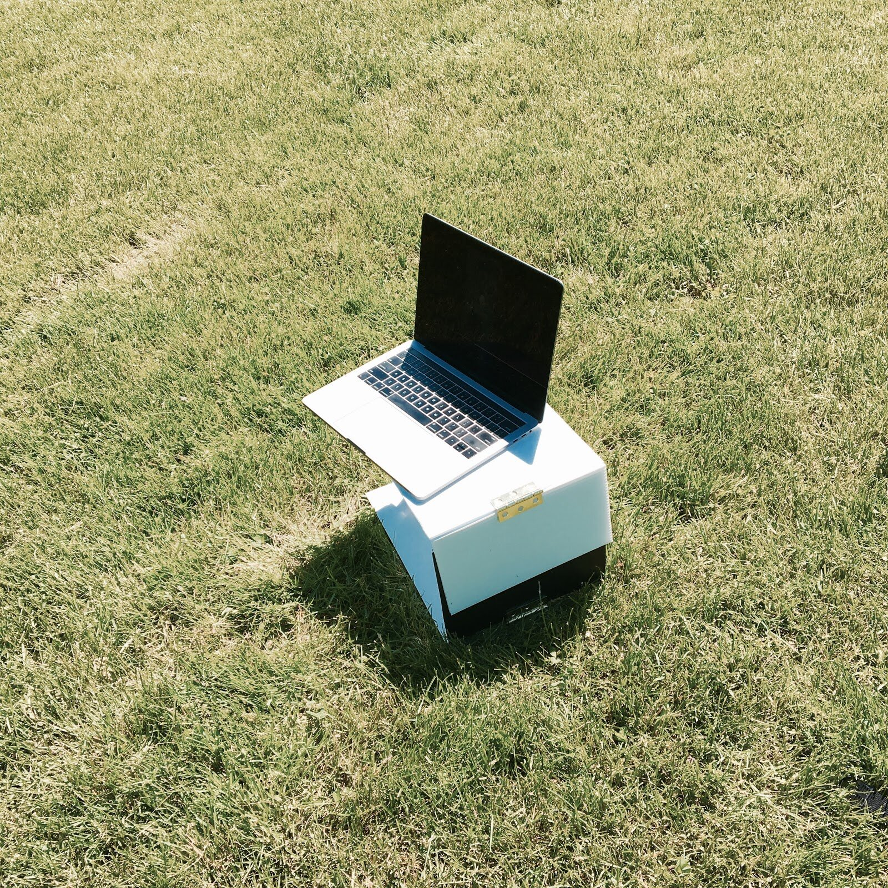

Light. Portable. Efficient.
How might we help students work productively in
non-traditional desk settings?
Our team noticed that students across campus were doing
their work in uncomfortable positions when traditional
desks were not available. Slick, a portable lap desk that
fits easily into any backpack, is our solution to this
problem space.
In order to do our user observation and confirm our initial thoughts, our team headed out to the lake.
We made sure to choose a day where the weather was nice, because this is when students are most inclined
to work outside. We were not disappointed to find that most students were indeed doing their work hunched
over in uncomfortable positions. In addition to visually observing the working students, we also asked
several questions about working in a non-traditional desk setting. Mainly the questions centered around what
material or aspect of a lap desk would be most convenient for a student. We then took these answers into
consideration when creating our prototypes and subsequent iterations.
After our first observation, we noticed a few key points that influenced our design decisions. Something that we did
not account for was the role of height of each individual person when they hunch down. We realized that we couldn’t
create a one size lap desk if our goal was for students to be more comfortable and not have to hunch down. This
consideration allowed us to create a design that deviated away from the traditional lap desks. We created a two piece
desk with a sliding mechanism. This allows the user to adjust the height of the desk to meet his or her needs. The two
pieces of the desk relies on a strong magnetic strip to slide up and down.
After our first observation, we noticed a few key points that influenced our design decisions. Something that we did
not account for was the role of height of each individual person when they hunch down. We realized that we couldn’t
create a one size lap desk if our goal was for students to be more comfortable and not have to hunch down. This
consideration allowed us to create a design that deviated away from the traditional lap desks. We created a two piece
desk with a sliding mechanism. This allows the user to adjust the height of the desk to meet his or her needs. The two
pieces of the desk relies on a strong magnetic strip to slide up and down.